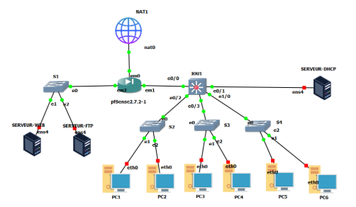
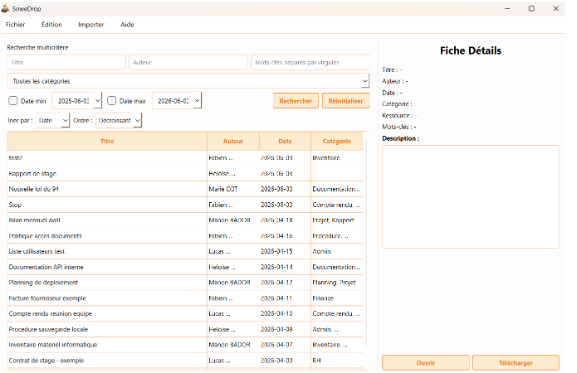
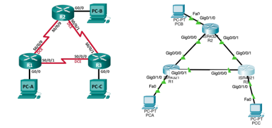

Moi ? Je suis votre future Technicienne Réseaux, élève en BUT Réseaux
et Télécommunications sur l'île de la Réunion.
Curieuse, organisée et persévérante, j'apprécie
particulièrement relever des défis techniques, ce qui me permet
de développer mes compétences techniques et humaines.
Car ce portfolio parle de moi, même quand je ne serais pas là.
Ce que j'en ai appris : Le BUT m'a permise de comprendre comment concevoir et sécuriser une infrastructure. J'ai appris à segmenter les flux avec des VLANs et à maîtriser l'adressage double pile (IPv4/IPv6).
Usage actuel : Je simule et configure des maquettes complexes sous GNS3 et Packet Tracer, et j'analyse le trafic avec Wireshark pour voir ce qui se passe concrètement.
Ce que j'en ai appris : L'immersion dans l'écosystème Linux (Debian, Kali) m'a appris la rigueur de la ligne de commande et l'automatisation. Je saisi mieux la gestion des permissions et l'importance de la virtualisation pour isoler les services.
Usage actuel : J'administre des serveurs à distance via SSH (Putty), je gère des architectures de stockage (NAS, RAID) et je scripte mes tâches répétitives en Bash.
Ce que j'en ai appris : Le code n'est pas juste du texte, c'est de la logique pure. En manipulant le langage C et le Python, j'ai développé une vraie structure algorithmique, tandis que le web (HTML/CSS/JS/PHP) m'a ouvert les portes de la création d'interfaces fluides.
Usage actuel : J'utilise les langages de programmation lorsqu'il est nécessaire et JavaScript pour rendre mes interfaces web dynamiques et interactives.
Ce que j'en ai appris : Un(e) bon(ne) technicien(ne) doit savoir communiquer. J'ai appris à rédiger des documentations techniques, des guides, à réaliser des montages vidéos, et à structurer un projet par étapes pour respecter les deadlines (Trello).
Usage actuel : J'organise mes rendus de groupe avec des outils agiles et je soigne chaque compte-rendu pour garantir la traçabilité des tâches.
Objectif : Mener de front et totalement seule ce projet particulièrement ambitieux. L'objectif était de concevoir de zéro l'infrastructure complète sous GNS3 : création d'un plan d'adressage minutieux, installation des services essentiels, routage et configuration sécurisée avancée (mise en place d'une DMZ, filtres et règles de pare-feu stricts).
Ce que j'en ai appris : Cette aventure en solo m'a poussée à développer une grande autonomie, à apprendre à me réguler et à maintenir ma motivation au maximum. J'ai appris à avancer par moi-même en explorant la documentation technique et en allant chercher les conseils avisés de mon professeur pour valider mes choix.

Objectif : Collaborer au sein d'une équipe de 4 personnes sur un projet très autonome et orienté entreprise. Nous devions concevoir l'outil tout en gérant un rythme professionnel : réunions de suivi d'avancement d'équipe et visioconférences régulières avec notre client. J'ai occupé les rôles de Développeur Logique Métier et de Testeuse.
Ce que j'en ai appris : J'ai pris en main l'hébergement GitHub, codé le site web de présentation, rédigé le guide utilisateur complet, développé la fonctionnalité d'ajout de documents et insufflé l'identité visuelle de l'application (nom, création du logo, thèmes de couleur et onglet contact). Ce projet long et passionnant m'a appris le respect rigoureux des jalons via Trello et l'importance de la transmission des connaissances, car nous avons conclu le projet en animant une session de formation client auprès d'étudiants.

Objectif : Ce bloc valorise l'ensemble de mes travaux pratiques en réseaux, qu'ils soient simulés sur Packet Tracer ou câblés sur des équipements physiques réels, avec ici un focus sur un TP centré sur le routage dynamique OSPF.
Ce que j'en ai appris : Pour être tout à fait honnête, j'ai eu beaucoup de mal en début d'année à m'habituer au rythme intensif du BUT. Mais à force de détermination, en restant travailler tard le soir pour refaire mes TP encore et encore, j'ai eu le déclic. Aujourd'hui, j'adore littéralement ça : concevoir des architectures, monter des plans de routage et taper des lignes de commandes dans le terminal !

Un projet à réaliser, une opportunité d'alternance ou simplement envie d'échanger ? Contactez-moi sur mes réseaux professionnels.